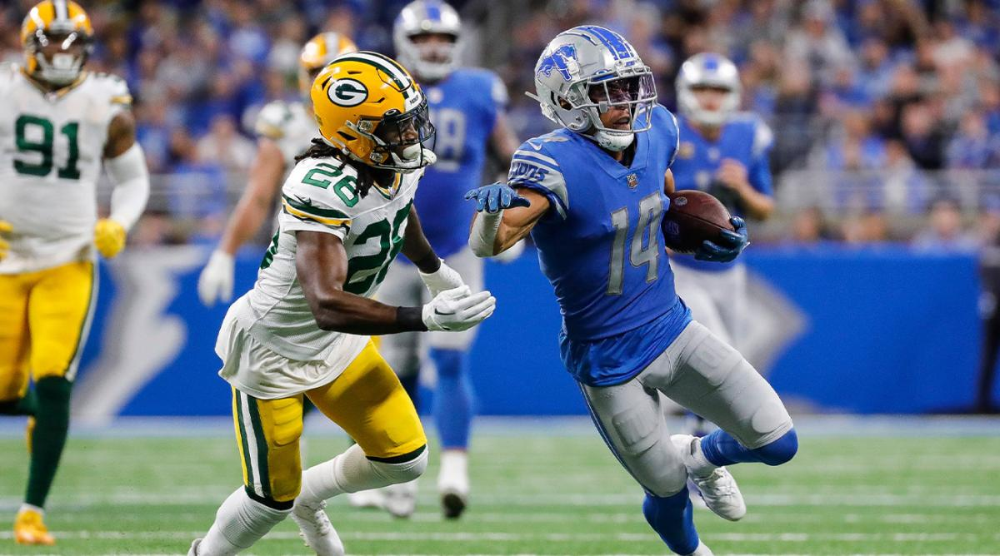
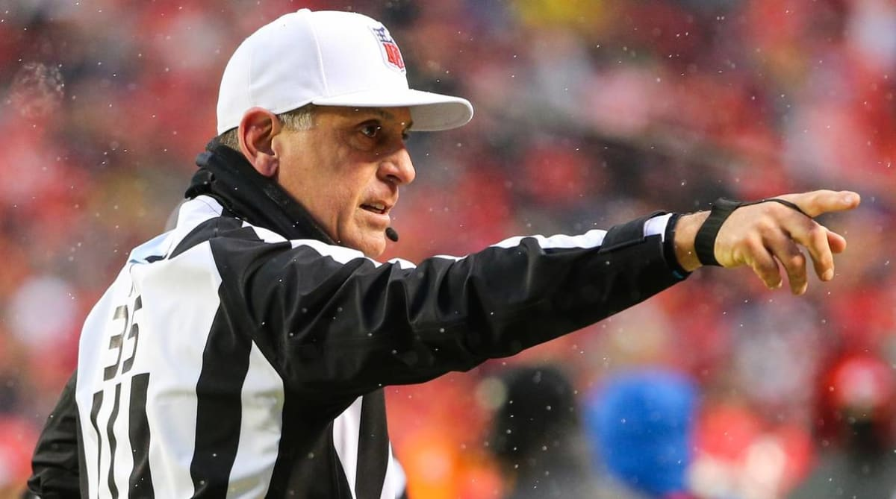
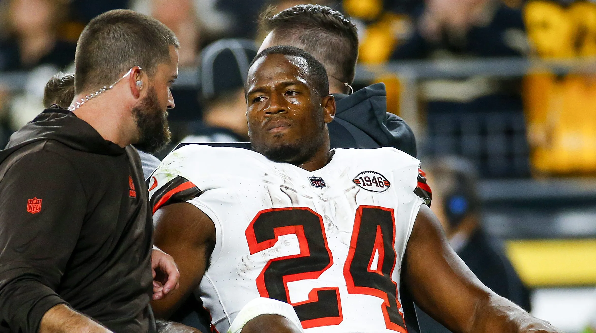

3 beginner tips for football wagering
Posted on October 29, 2024
1. Divisional Matchups
When it comes to divisional games, they’re generally more competitive since teams are familiar with each other’s strengths and weaknesses. This rivalry often leads to unpredictable outcomes but can also create valuable betting lines, especially if one team consistently performs well against their division foes. These matchups can be tightly contested and even push underdog teams to outpace their typical performance, making it worth exploring the underdog and point-spread options in divisional games.
2. How referees affect outcomes
Another lesser-known but influential factor is understanding referee tendencies and game-market trends under different officials. Some referees are known to call games tightly, which can lead to higher penalty counts or favor specific game outcomes like the under on point totals. By reviewing data on referees' historical records with different teams and betting markets, bettors can make more informed choices. For example, during the 2023 NFL Season home teams won 82.4 % of the 17 games officiated by tenured NFL referee and line judge, John Hussey and during the 2015 NFL season, home teams only won 33% of games officiated by Brad Allen.
3. Understanding Injuries
Injuries are a critical component in sports betting, as they can shift game dynamics and influence point spreads significantly. The absence of a star player, especially a quarterback or a key defensive player, can heavily alter a team’s odds of winning and their ability to cover the spread. It’s essential to monitor injury reports leading up to the game, as even last-minute updates can swing lines and create new value opportunities. Staying informed about each team’s health status allows bettors to gauge more accurately how a team might perform, adjusting their bets accordingly to maximize potential returns. Long term injuries allow backup players a chance to see a significant increase in snaps resulting in differing target shares and differances in playtype percentages.
